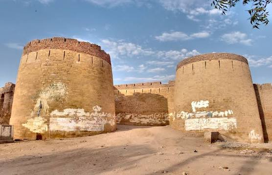
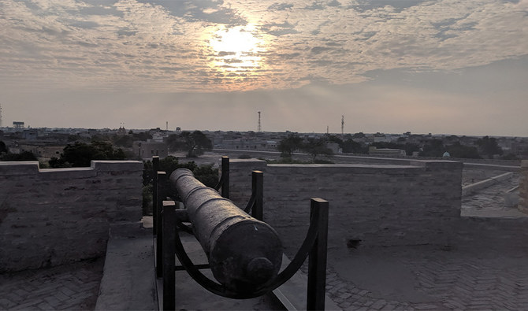
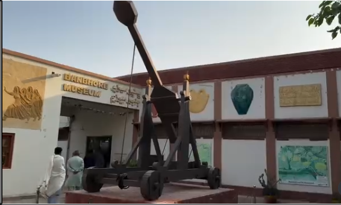
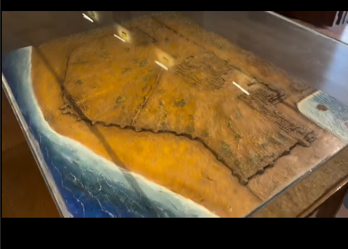
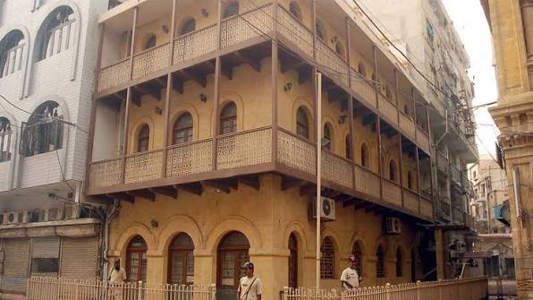
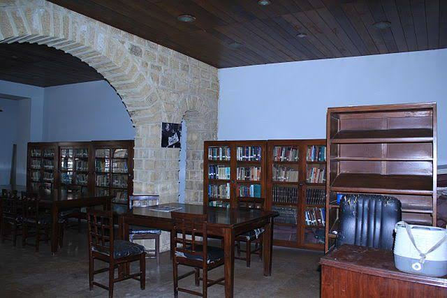
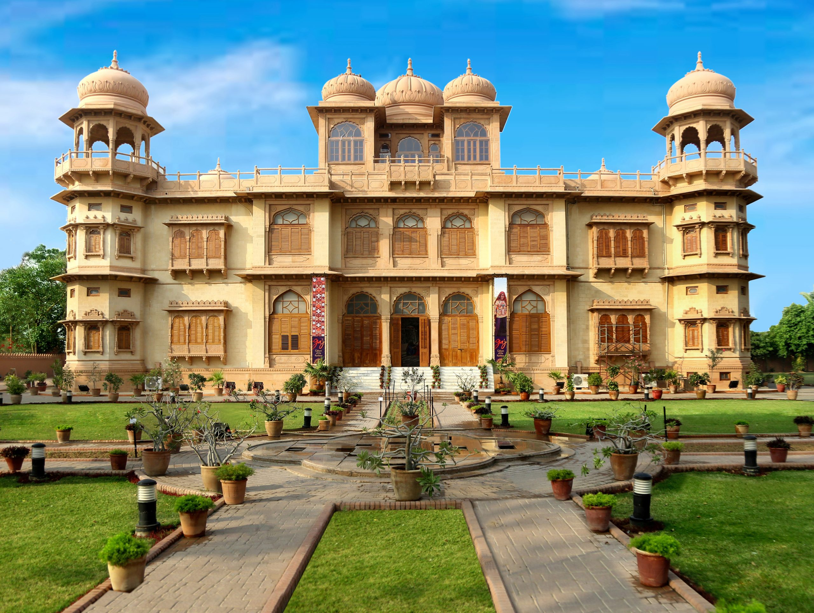
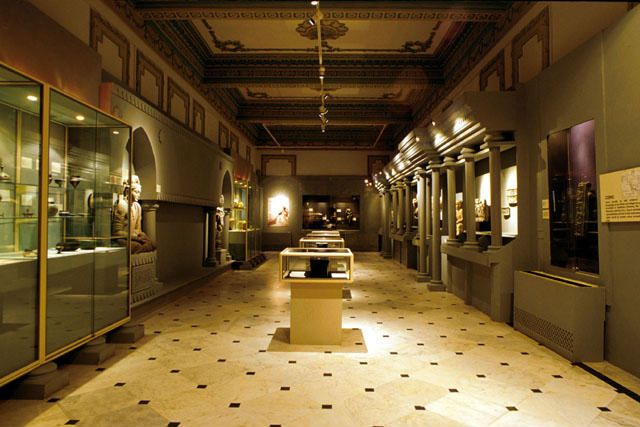
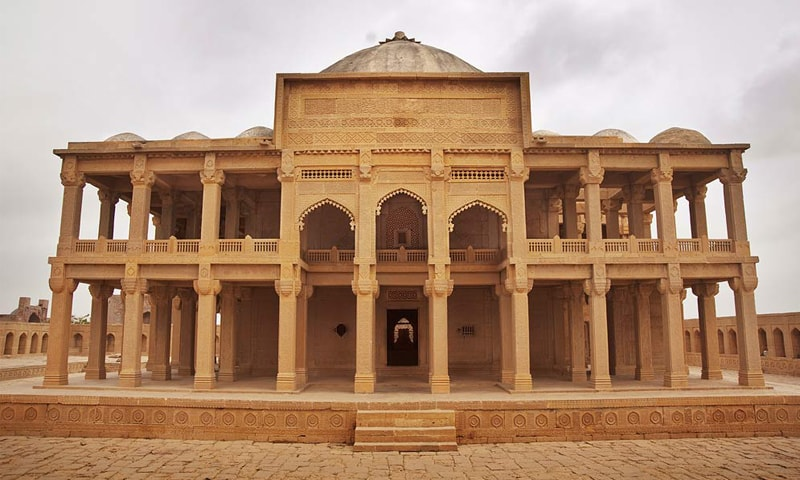
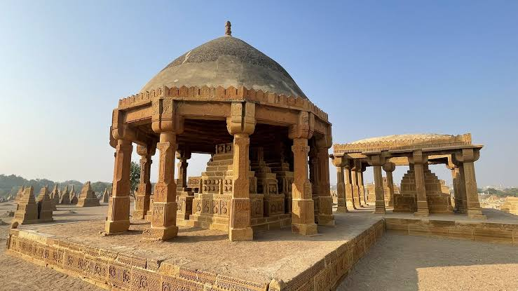

Historical & Cultural Sites of Sindh
Sindh's historical and cultural sites carry centuries of stories — from royal forts to grand mansions. This page covers five places I've personally visited, each with its own history worth knowing before you go.
Umerkot Fort
Umerkot Fort is an ancient fort located in Umerkot, Sindh. When I visited, I found it splendid, and it made me imagine how people lived here at a time with no phones or social media. Standing there, I thought about the story of Marvi and Umar, which is connected to this place, and I realized how much life mattered even without technology. Our culture shapes our behavior and everything we are, and this fort reminded me of that.


Bhambhore Museum
Bhambhore is an ancient city located in Thatta where, in the past, floods repeatedly struck the area, burying homes and belongings beneath the earth. Many of these excavated items are now on display in the Bhambhore Museum, showing the kind of equipment and tools ancient people once used. The museum holds several gold and silver artifacts, and I learned that some historical items from the site were taken by foreign parties over the years. Outside the museum, there's also an old catapult on display — a reminder of the wars and conflicts this city once witnessed.


Wazir Mansion
Wazir Mansion is not just a place — it's an important part of Pakistan's identity. It is the birthplace of Quaid-e-Azam Muhammad Ali Jinnah, Pakistan's first Governor-General, located in Karachi. Inside, many of his personal belongings are preserved, including his books, watch, clothes, and furniture — from his sofa to his bedroom and dining room. When I entered, I felt curious to learn about everything, moving from room to room rather than stopping to study each item in detail.


Mohatta Palace
Mohatta Palace, located in Karachi, is one of Sindh's most beautifully preserved buildings, blending Mughal and European architectural styles. Today, it functions as a museum, with its grand halls transformed into gallery spaces that showcase regional art, textiles, and historical artifacts. The building itself — with its detailed stonework, arches, and chandeliers — is as much a part of the experience as the exhibits inside.


Makli Necropolis
Makli Necropolis, located near Thatta, was the first graveyard I had ever visited in my life, and it left a strong impression on me because of its sheer size. It is one of the largest necropolises in the world, holding the tombs of rulers, saints, and notable figures who contributed to Sindh's history. What stood out most to me was the architecture — the tombs are built with intricate carvings and designs, using materials that felt genuine and untouched by anything artificial.

